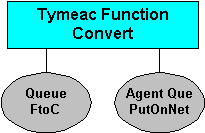
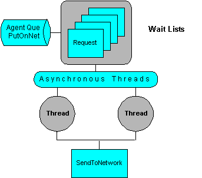
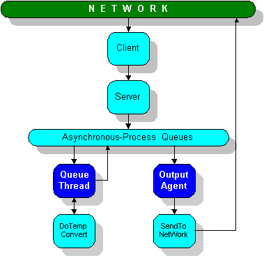

Development Example
Preface
A Client wants to execute a method on the Server and it wants the method to use current data. Therefore, the Client passes the current data (what we call "input") to the code. The Client wants two things from the Server:
- A response that says the Server worked perfectly.
- The result of the application method working on the current data, what we call "returned data".
Let's say the Server calculates Celsius based on Fahrenheit. The Client passes a Fahrenheit number "input" to the Server and the Server returns a Celsius number "returned data" to the Client. Additionally, Tymeac includes a String indicating how the Tymeac Server performed (not the underlying application.)
The Client can wait for the process to complete, a Synchronous Request.
The Client may not wait for the process to complete. This is an Asynchronous Request, also called autonomous processing. In such a case, how would the Client ever know what happened and where would the "returned data" go? The Server code could transmit it to the Client in the network. Unfortunately, this would make the application code very complex.
Tymeac's answer to overly complex applications is to separate the do-the-work from the what-now. The application method (do-the-work) calculates the Celsius number, wraps it in an Object and returns the Object to the Server. The Server returns the Object to the Client for a Synchronous Request.
For the Asynchronous Request the Server may (this is optional) put the returned Object in a Queue called the Output Agent Queue. An Output Agent Queue is just like any other Tymeac Queue. It has Wait Lists, threads and another Processing Application Class that you write. This is where you may put the what-now code. When you define the Queue, you have the option of specifying it as an "Output Agent" Queue.
For example, when you wish the Client to receive the "returned data" on the network you would do the following:
First you must write two Processing Application Classes:
- DoTempConv -- Converts Fahrenheit.to Celsius.
- SendToNetwork -- Sends the Converted Object to the user.
Then you define
- a Tymeac Function called "Convert" that contains a normal Tymeac Queue called "FtoC" (short for Fahrenheit to Celsius) and Output Agent Queue called "PutOnNet".

- a Tymeac Queue called "FtoC" that uses a Processing Application Class called "DoTempConv".
- a Tymeac Output Agent Queue called "PutOnNet" that uses a Processing Application Class called "SendToNetwork".

Now at execution time:
The Client does an Asynchronous Request to the Tymeac Server passing the Fahrenheit number "input"
The Tymeac Server puts the "input" into Queue "Convert". A Queue Thread associated with this Queue picks up the "input" and using Java Reflection invokes the main() method of Class "DoTempConv".
The "DoTempConv" Class returns an Object "Converted" to the Queue Thread.
The Queue Thread puts the "Converted" object, which is now a new "input", into Queue "PutOnNet". An Output Agent Thread associated with this Queue picks up the new "input" and using Java Reflection invokes the main() method of Class "SendToNetwork".
The "SendToNetwork" Class passes the "Converted" object to the network.

Now if that was all there was to Tymeac, then it would be a very nice backend process manager. But there is more. Tymeac is also a Request Broker. Your Tymeac Functions may contain multiple Tymeac Queues.
What if your "input" Fahrenheit number also needs converting to a second or third scale? No problem. You simple write the Processing Application Class to do this conversion. Define Tymeac Queues as above. Add the new Queues to the Tymeac Function. Now when you execute this Tymeac Function, you get back all the conversions in one Object array.
The details begin with the Processing Application Class.